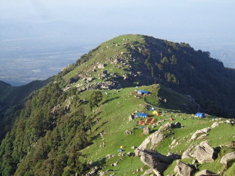
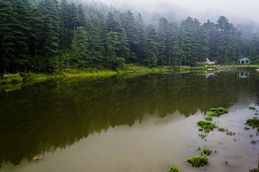

Lying in the shadow of mighty Dhauladhar range is the quaint town of Dharamshala. Divided in two halves – Kotwali Bazar and the skirting markets make up Lower Dharamshala, which makes a dramatic transition in the upper reaches that has thick pine, cedar and Himalayan oak forests around the township of Mcleodganj.
It is an 18 km gradual uphill drive from Kangra that gets you to Dharamshala. Mcleodganj serves as the capital of the Tibetan Government in exile. With rising altitude, the summer temperature between Lower and Upper Dharamshala changes from warm to cool climes.
It was in the wake of the Tibetan uprising of 1959 that His Holiness the 14th Dalai Lama escaped from Lhasa. Choosing Mcleodganj for an abode in exile saw an influx of Tibetan population that followed him into exile. Often referred to as ‘Little Lhasa’ the vivid character of the city today attracts many famous people, including country heads, filmmakers and diplomats to Mcleodganj, Dharamshala from all over the world.
Colonial influence, however, has its imprint intact in the town which can be spotted in many buildings, a church and other landmarks of the era scattered around the town and its suburbs.
Language: Hindi, Punjabi, English are understood and spoken by the people engaged in tourism trade. Natives speak Kangri and Tibetan is spoken by the immigrant Buddhist community.
Clothing Essentials:Lower reaches of Dharamshala experience higher temperature in summers whereas the upper region gets really cold in winters. Just like most hilly regions of Himachal, cotton clothes are preferable in summers and heavy woolens are needed for winters. The spring and autumn seasons with moderate temperatures are a good time to be in town.
|  | Triund For those who love the outdoors, Dhauladhar is excellent trekking country. To enjoying stunning views of the vast Kangra valley a summer trek to Triund (altitude 2875 meter), just below the snowline is being up close to the spectacular peaks of the ‘white ranges’. Making way through thick oak and deodar forests with scattered rhododendron flowers in the path, this moderate trek starts at about 10 km distance from Mcleodganj. |
|
Dal Lake:
Dal Lake is 4 km from Mcleodganj, is a quiet picnic spot. The area has a deodar tree forest cover from all sides and is marked by the Durveshwar temple on one side. Its setting makes for a pleasant afternoon escapade. |
 |
Kareri Lake
At 2934 meters altitude, this mountain water body is a trekking destination in the Dhauladhars. Source of the shallow lakes water is snow melt. In the deep blue crystal clear water you can see the lakes bed at most places. Kareri lake is at a distance of 9 km from Dharamshala. It also serves as a base for trekking further into the Dhauladhars and onward to Chamba.
Indrahar Pass
J Indrahar Pass at an altitude of 4,342 meters is a demanding trek from Galu Devi Temple near Dharamkot village, Dharamshala. One can attempt to cross this pass that goes over some incredible terrain from April to October. View of Dhauladhars, Pir Panjal Mountains and Arthur’s Seat from the pass is spectacular. On the trek, camping at Lahesh Cave, a natural rock shelter, is a great experience .